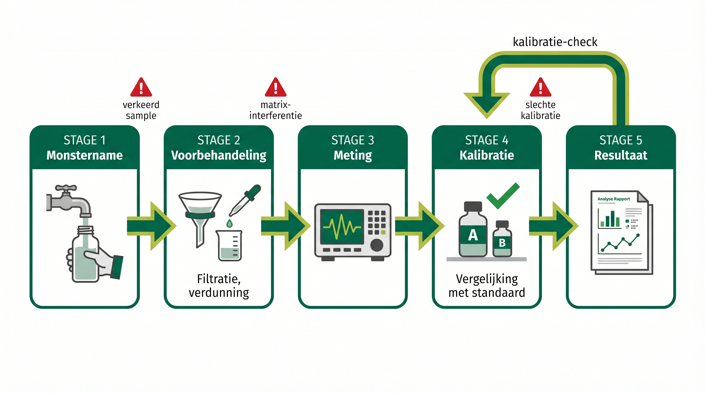
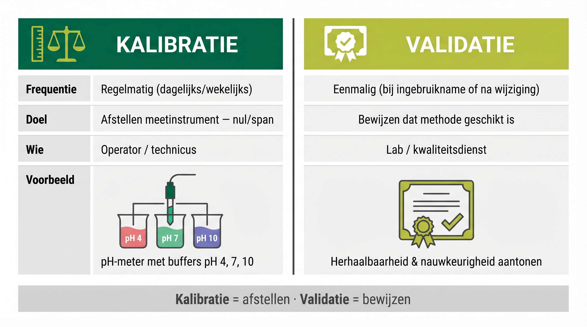
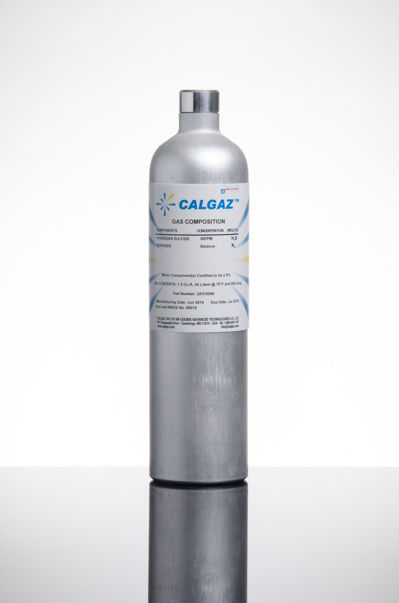
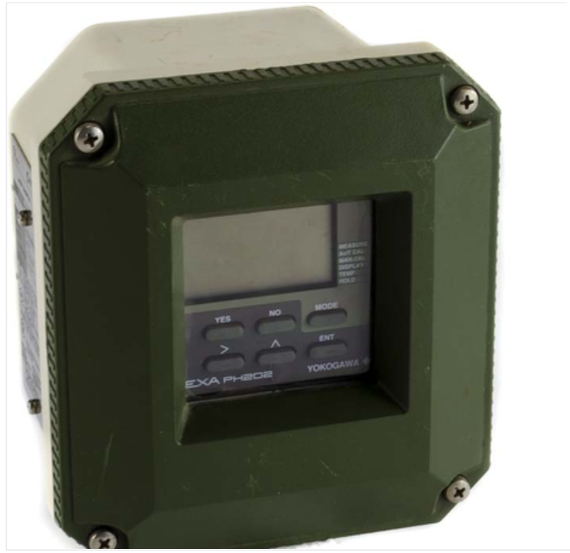
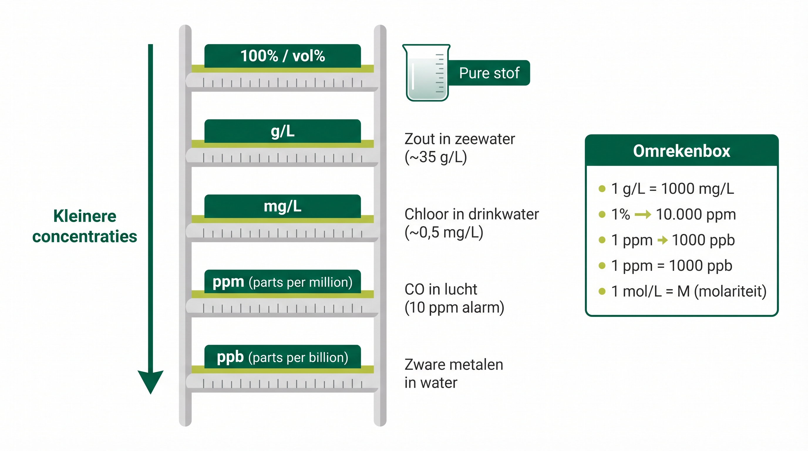

Het analyseproces: van monstername tot meetresultaat
Een sample (monster) is een kleine, zorgvuldig geselecteerde hoeveelheid materiaal die je neemt om te analyseren. Dit kan zowel een vloeistof, gas of een vaste stof zijn.
Kernpunten van een goed sample:
🔄 In Module 1 zagen we hoe cruciaal betrouwbare metingen zijn voor veiligheid. Maar zelfs de best gekalibreerde analyzer geeft onjuiste resultaten als het sample niet representatief is of als externe factoren zoals temperatuur en druk de meting beïnvloeden. Een goede sampling en begrip van de samplematrix zijn daarom even belangrijk als een correct gekalibreerde analyzer.
📖 Praktijkvoorbeeld
In een raffinaderij wordt elk uur een sample genomen van een benzinefractie. Als de operator te vaak enkel van boven in de tank bemonstert, zal hij een vertekend beeld krijgen doordat de toplaag niet representatief is voor de gehele tankinhoud. De door de analyser gevonden resultaten geven dan geen juist beeld van de totale inhoud van de tank.
📷 Monstername in het veld — operator neemt sample bij een procesinstallatie
Foto volgt
De samplematrix is alles wat zich in het sample bevindt, behalve de specifieke stof die je wilt meten. Het is als het ware de “achtergrond” of “omgeving” waarin de te bepalen stof zich bevindt.
Belangrijke aspecten van de samplematrix:
Stel dat je het suikergehalte in een glas cola wilt meten.
Voordat je meet, moet je misschien de cola ontgassen (koolzuur verwijderen), verdunnen (kleur minder intens maken) of neutraliseren (zuren onschadelijk maken).
Meetnauwkeurigheid: Als je de samplematrix niet goed kent, kunnen de andere stoffen in het sample het meetproces verstoren. Een analyzer die werkt voor zuivere suiker in water, werkt mogelijk niet correct voor suiker in cola.
Kalibratievereisten: Analyzers moeten vaak gekalibreerd worden met standaarden die een vergelijkbare matrix hebben als het sample. Het kalibreren van een analyzer met zuivere suiker in water terwijl je cola gaat meten, kan leiden tot systematische fouten.
📖 Praktijkvoorbeeld in de industrie
In een chemische fabriek wordt een online analyzer gebruikt om een specifieke component in een processtroom te meten. Als er onverwacht een nieuw bijproduct in het proces ontstaat (verandering in de matrix), kan de analyzer plotseling onjuiste waarden tonen, terwijl het lijkt alsof het proces afwijkt. Een ervaren analist weet dat eerst gecheckt moet worden of de matrix is veranderd, voordat procesaanpassingen worden gedaan.
Matrixeffecten in verschillende industrieën:
💬 Bespreek in duo’s: Hoe wordt bij jullie op stage een sample genomen? Wat zijn daar de regels voor? Wordt er bij analyse rekening gehouden met de matrix?
In de analysetechniek worden kalibratie en validatie anders gebruikt dan bij gewone instrumentatie. Bij gewone meetinstrumenten valideer je regelmatig of het instrument nog binnen specificaties meet, en kalibreer je alleen als je een afstelling moet maken. Bij analytische systemen werkt het andersom.
Kalibreren doe je bij analytische apparatuur regelmatig om de meetapparatuur correct af te stellen – bijvoorbeeld een pH-meter instellen met bufferoplossingen of een gaschromatograaf kalibreren met standaardmengsels. Het zorgt ervoor dat je instrument de juiste waarden weergeeft door het te vergelijken met bekende standaarden. Dit doe je vaak dagelijks of na onderhoud. Valideren gebeurt maar één keer en bewijst dat je hele analysemethode geschikt is voor wat je wilt meten. Hierbij wordt gekeken naar het complete proces van monstername tot eindresultaat: heeft de methode herhaalbaarheid, verstoren andere stoffen in het monster de meting, en is de nauwkeurigheid goed genoeg? Validatie wordt meestal door laboratoriumpersoneel uitgevoerd. Als technicus is het belangrijk te weten dat beide nodig zijn en elkaar aanvullen.

Vergelijking kalibratie en validatie — twee essentiële kwaliteitsprocessen

Kalibratiegascilinder (CalGaz) — gecertificeerd referentiegas voor het kalibreren van gasanalyzers
Er zijn verschillende manieren om te kalibreren, waarvan de meest gangbare:
Andere termen die je ook kunt tegenkomen zijn:
1. Nauwkeurige kalibratie van meetinstrumenten
2. Vergelijkbaarheid van resultaten
3. Kwaliteitsborging (QA/QC)
4. Validatie van analysemethoden
5. Voldoen aan regelgeving en accreditatie
6. Internationale erkenning

Industriële pH-meter (Yokogawa) — wordt regelmatig gekalibreerd met bufferoplossingen
🔄 Je hebt in Module 1 geleerd hoe purgesystemen en detectiesensoren je beschermen tegen giftige gassen. Maar deze systemen vertrouwen op goed afgestelde analyzers. Kalibratie is dus niet alleen technisch belangrijk, maar ook cruciaal voor persoonlijke veiligheid.

Overzicht van veelgebruikte concentratie-eenheden in de analytische chemie (ppm, ppb, mol/L, gewichtsprocent)
📷 Analyzer display met concentratiewaarden — aflezing van meetresultaten
Foto volgt